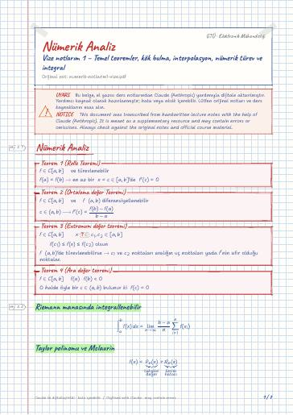
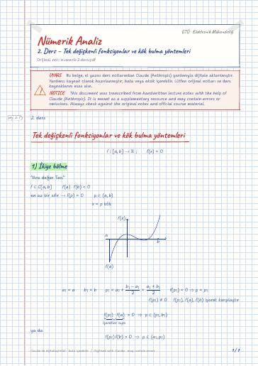
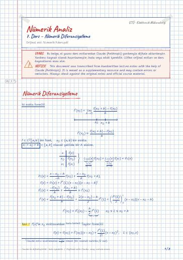
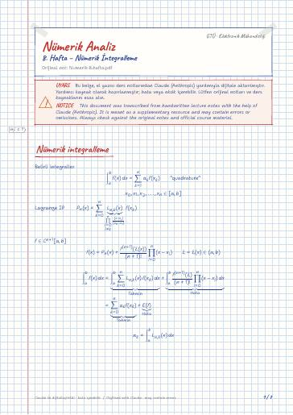

1. Ders – Kalkülüs Tekrarı
Kalkülüs Tekrarı · 1 (Rolle Teoremi) · 2 (Ortalama Değer Teoremi) · 3 (Extremum değer Teoremi) · 4 (Ara değer teoremi) · 5 (İntegral için ara değer teoremi)
Numerical Analysis — lecture notes, past exams, and projects at Gebze Technical University (GTU) Electronics Engineering
Kök bulma, interpolasyon, sayısal türev ve integral, lineer denklem sistemleri için doğrudan ve iteratif yöntemler, diferansiyel denklemlerin sayısal çözümü.
Root finding, interpolation, numerical differentiation and integration, direct and iterative methods for linear systems, and numerical solution of ODEs.
Bu sayfada: Ders Notları Dijital Notlar (LaTeX) Çıkmış Sorular Projeler GitHub Depoları Kaynak Kitaplar
El yazısı notların LaTeX ile yazılmış, aranabilir dijital versiyonları. Şablon ve derleme: latex-sablon.
Kalkülüs Tekrarı · 1 (Rolle Teoremi) · 2 (Ortalama Değer Teoremi) · 3 (Extremum değer Teoremi) · 4 (Ara değer teoremi) · 5 (İntegral için ara değer teoremi)

Nümerik Analiz · 1 (Rolle Teoremi) · 2 (Ortalama değer Teoremi) · 3 (Extremum değer teoremi) · 4 (Ara değer teoremi) · Riemann manasında integrallenebilir

Tek değişkenli fonksiyonlar ve kök bulma yöntemleri · 1) İkiye bölme · Sabit nokta (fixed point iteration) · 2 – Sabit nokta teoremi · Sonuç! · Uygulama 2

Kök bulma yöntemleri – devamı · Newton (Newton-Raphson) yöntemi · Sekant yöntemi · İterasyon yöntemlerinde Hata analizi · Sonuç · Uygulama 3

Nümerik Diferansiyelleme · 3 nokta (üç nokta) formülü · 2. mertebeden türev için nümerik diferansiyelleme formülü · Uygulama · bağlanmış sınır koşulu

Nümerik integralleme · Trapezoid (yamuk) kuralı · (İntegral için ortalama (ara) değer teoremi) · Simpson kuralı · Kapalı Newton-Cotes formülü (Genelleme) · Açık Newton-Cotes formülü (Genelleme)

Diferansiyel Denklemler için Sayısal Yöntemler · Euler Yöntemi · Yüksek dereceden Taylor Yöntemi

Lineer Cebir Denklem sistemleri için iterasyon yöntemleri · Matris özdeğer ve özvektörleri, spektral yarıçap · Yakınsak Matrisler · 2- Jacobi iterasyon yöntemi · 3. Gauss-Seidel iterasyon yöntemi

Lineer Cebri Denklem Sistemleri için İterasyon Yöntemleri · Matrisin özdeğer ve özvektörleri, Spektral Yarıçap · Yakınsak Matrisler · Lineer Cebri Denklem sistemi için Jacobi iterasyon yöntemi · Sorular
Derste kullanılan kaynaklar (kitapların kendisi telif hakları nedeniyle yayımlanmaz):
Devre Teorisi I · Devre Teorisi I Laboratuvarı · Diferansiyel Denklemler · Elektronik Elemanlar · İngilizce · Türkçe I
GitHub'da klasörü aç← 3. Dönem
Ders materyallerinin hakları ilgili öğretim üyelerine ve GTÜ'ye aittir; eğitim amacıyla paylaşılmıştır.